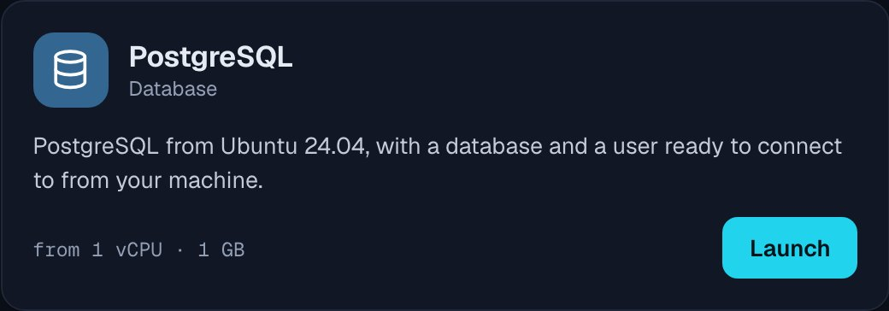

A database is one click.
PostgreSQL, MySQL, S3 storage, Prometheus with Grafana: each is a recipe that builds its VMs, installs the software and hands you the address and the login.
No containers to manage. The services are ordinary VMs you can open, snapshot and give more disk.